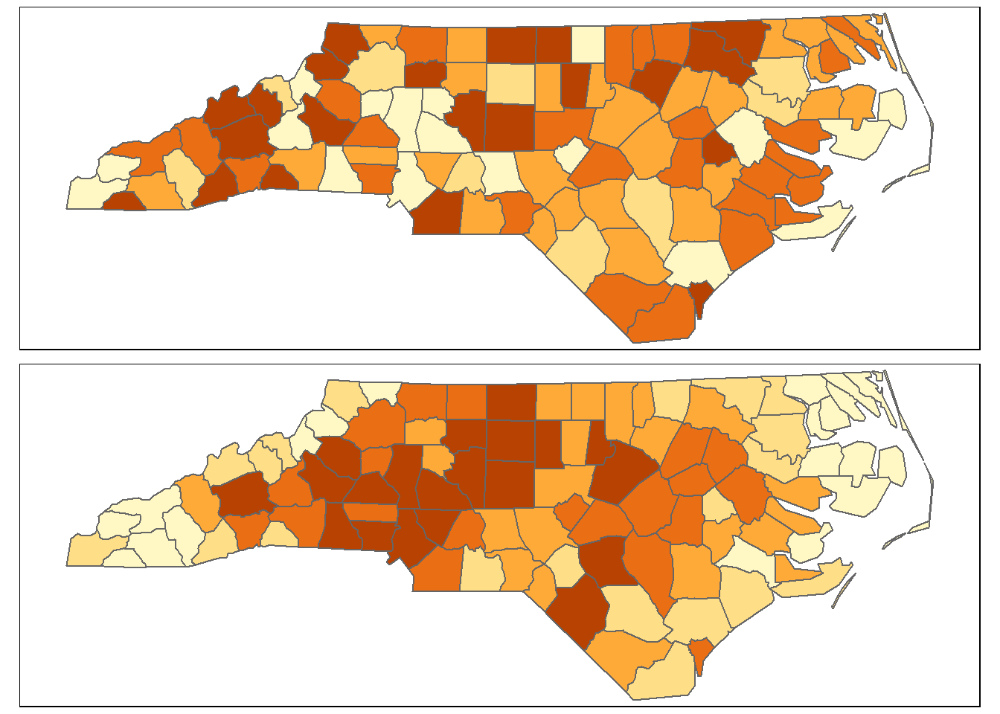

Spatial Autocorrelation II
What is Spatial Autocorrelation?
In the previous R Module, we introduced the idea of calculating a
“spatial neighborhood” and the need for a formal definition of this
neighborhood prior to spatial autocorrelation testing. Although these
constructs are relatively easy to make in R with the spdep
package, we have a lot of options; which method is best? Unfortunately,
there isn’t a single best method to use; it depends on the data you
have, the scale you’re looking at, and what you wish to accomplish.
Therefore, the results of spatial autocorrelation testing depend heavily on the choices for your spatial neighborhood. The best recourse is to first theorize the spatial form of the process you’re investigating and to test several spatial neighbor constructs to see if your results change significantly when your neighborhoods change.
Assigning Weights
Before we test spatial autocorrelation on our data, there’s another step for us to perform after we create our neighbor constructs – our spatial weights matrix \(W_{ij}\). Recall from the previous Module that \(W_{ij}\) is an \(n \times n\) matrix, where \(n\) is the number of spatial units (points or areas). The cells of the matrix record the presence or absence of connections as a binary measure; \(0\) indicates no connection between the two units, and \(1\) indicates a connection.
We use binary measures because it’s often difficult to determine the “relative influence” of spatial units on one another – North Carolina, for example, borders both Virginia and Georgia, but its border with Virginia is much longer. So, rather than guess the value, we start with a binary measure; either there exists a connection or there doesn’t.
Suppose we had a study region that consisted of five counties and we applied one of the neighborhood criteria from last R Module. Our \(W_{ij}\) would be a \(5 \times 5\) matrix, with cell values of either \(0\) or \(1\), and might look something like this:

Standardizing Weights
Notice that some counties may have more or fewer connections than
others, meaning this wasn’t made with \(k\)-nearest neighbor. For example, county
A has 2 neighbors (we don’t count self-connections, so
A’s neighbors are B and E).
However, E has 3 neighbors: A, C,
and D. Because these connections are roughly analogous to
influence (counties with more connections likely have a greater
influence on the surrounding areas), we should set the total influence
upon a given unit to 1. In other words, we need to standardize the
connections, typically done by row standardizing.
To row standardize a matrix, we first sum each row, then divide each non-zero cell in that row by the sum total:

Row standardization splits the influence from neighboring units proportionally. Put another way, row standardizing weights the influence each county has on its neighbors proportionally and standardizes the total influence on each spatial unit. There are other kinds of weighting schemes but row standardization in commonly used, and is relatively easy to perform in R. Once we’re done with this step, we can finally calculate our global Moran’s I measure. To demonstrate, let’s return to our data from the previous R Module.
Calculating the Spatial Weights Matrix
Load the required libraries and read in the shapefile to R.
Re-project the data to NAD 83 / UTM Zone 17N (please reference R Module
8), then use poly2nb to create a Queen’s case \(W_{ij}\). After that, we’ll use the
nb2listw() function to row standardize our matrix.
queen_nb_w <- nb2listw(
neighbours = queen_nb,
# The default style, "W", tells us that we're performing row standardization
style = "W",
# Don't worry about this option for now, but it'll be important to include
# later.
zero.policy = TRUE
)
summary(queen_nb_w)## Characteristics of weights list object:
## Neighbour list object:
## Number of regions: 100
## Number of nonzero links: 490
## Percentage nonzero weights: 4.9
## Average number of links: 4.9
## Link number distribution:
##
## 2 3 4 5 6 7 8 9
## 8 15 17 23 19 14 2 2
## 8 least connected regions:
## Currituck Chowan Tyrrell Dare Polk Pamlico Clay New Hanover with 2 links
## 2 most connected regions:
## Iredell Moore with 9 links
##
## Weights style: W
## Weights constants summary:
## n nn S0 S1 S2
## W 100 10000 100 44.65023 410.4746Printing the new object itself doesnt show us our \(W_{ij}\) directly (technically it isn’t stored as a matrix in R)
Global Moran’s I
Moran’s I is a test of whether a variable autocorrelates with itself across space. The calculation for Moran’s I is actually quite similar to the Pearson’s \(r\) correlation; the main differences are that:
- Moran’s I is a test of a single variable, and
- Moran’s I requires us to first define our spatial weights matrix \(W_{ij}\)
We’ve done this already, so now we’re finally able to calculate Moran’s I.
What does I represent?
The Moran’s I test returns a single value, ranging from \(-1\) to \(1\), indicating “autocorrelation”. When \(I = -1\), the variable in question is perfectly “negatively spatially autocorrelated” – high values neighbor low values – think about them like similar poles on bar magnets and how they “want” to repel each other. When \(I = 1\), the variable in question is perfectly “positively spatially autocorrelated” – high values “clump” together, as do low values.
What happens when \(I = 0\)? This indicates “spatial randomness” – sometimes high and low values occur, sometimes they are dispersed, but there’s no systematic pattern governing their distribution.
Because Moran’s I is a single value, it’s easy to interpret; it shows the “global measure” of autocorrelation. However, actually calculating the Moran’s I is somewhat difficult.
Calculating Moran’s I
The real challenge in calculating Moran’s I is in creating the sampling distribution that we need to find our critical values and our \(p\)-values used in hypothesis testing. The safest assumption is that the statistical distribution (not spatial distribution!) of our variable in question is not normal. However, we can approximate a normal sampling distribution through spatial randomization.
The actual values assigned to each spatial unit are randomized repeatedly – the values are moved to a randomly-designated spatial unit – to create a distribution that we use for our hypothesis test. The expected value of \(I\) for that “theoretical” distribution approaches \(0\) as the number of spatial units increases, and the standard deviation of the sampling distribution can only be derived once \(W_{ij}\) has been created.
What this essentially means is that we’re comparing our measured values against a “hypothetical distribution” in which those values are distributed randomly across space.
For example, the top map shows a variable that is randomly distributed across space, and the bottom map shows one that likely is spatially autocorrelated:

This is the null hypothesis associated with Moran’s I: spatial randomness. If the variable in question doesn’t spatially autocorrelate (i.e., it doesn’t differ significantly from a hypothetical random spatial distribution), we do not reject the null. However, if the variable does autocorrelate and our \(p\)-values are greater than our \(\alpha\) (usually 0.05), then we reject the null hypothesis and can confidently state that our variable spatially autocorrelates.
More formally, our null hypothesis is that our calculated \(I\) is equal to the expected \(I \approx 0\). The alternative hypothesis is that the calculated \(I \neq\) the expected \(I\). Thus, we have a two-tailed test.
Performing the Moran’s I Calculation
Let’s try this on the variable for manufacturing jobs in the year
2000, MNEM2000:
moran.test(
x = NC_UTM$MNEM2000,
listw = queen_nb_w,
zero.policy = TRUE,
alternative = "two.sided"
)##
## Moran I test under randomisation
##
## data: NC_UTM$MNEM2000
## weights: queen_nb_w
##
## Moran I statistic standard deviate = 6.2869, p-value = 3.239e-10
## alternative hypothesis: two.sided
## sample estimates:
## Moran I statistic Expectation Variance
## 0.388470385 -0.010101010 0.004019201The calculated Moran’s I is listed (as statistic) along
with the expected value of the “hypothetical” sampling distribution (as
Expectation), as well as the \(p\)-value. The expected value is around
-0.01, and the calculated \(I\) of
0.3884 is not close to the expected value (which should
be close to 0). Unsurprisingly, our \(p\)-value is also fairly low, at \(3.239\times 10^{-10}\).
This means than using a sampling distribution created by
randomization and a row-standardized Queen’s case spatial weights
matrix, we would have much less than a 1% chance of making a Type-I
error if we reject our null hypothesis (of no spatial autocorrelation).
We can confidently say, therefore, that MNEM2000 is a
spatially autocorrelated variable.
Questions
1. Calculate Moran’s I for the following variables in the dataset. List the Moran’s I values and p-values for each variable in a single summary table:
MNEM2000MNEM1990TOTJOB2000TOTJOB1990
Provide your R code for the Moran’s I tests (not the results themselves – that’s what the table is for).
Rook Case
So,
© 2022 brownhr & M. Sugg. v.0.0.10